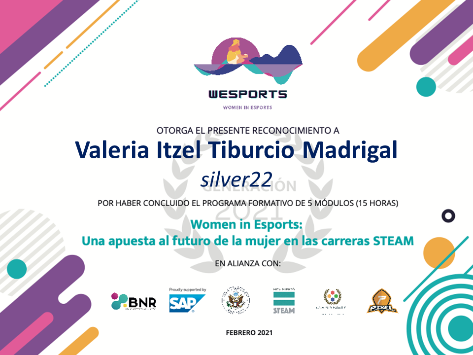

WOMEN IN ESPORTS
- "Women in Esports" fue un programa de capacitación que constaba de 5 módulos; cada uno trataba un tema diferente sobre las carreras STEAM, cómo iniciar si querías convertirte en una gamer profesional, los ingresos que obtenían los gamers de diversos equipos, entre otros temas.
- También se trataron temas como las diferentes carreraw relacionadas con videojuegos y la poca participación femenina en estas carreras; también la desigualdad que existe tanto en el medio como en los videojuegos y los esteriotipos que se le tiene a la mujer para lucir más "atractiva" para ser escogida como un personaje.
- Mi participación fue en relación a las actividades realizadas durante los diversos módulos, entre las cuales, puedo destacar el trabajo en equipo realizado para proponer soluciones a las diferentes problemáticas señaladas.
- De esta manera, obtuve una capacitación sobre las diversas carreras que pueden interesarme que tienen relación con los videojuegos y algunos tips para poder iniciar como una gamer profesional, sus ventajas, desventajas y ser inteligente en relación a cómo desarrollarme en el medio.